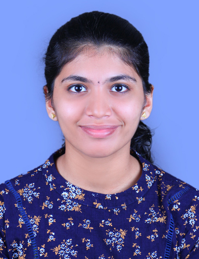

|  |
Address : Kozhikode,India Email: aiswaryaskshajil@gmail.com Linkedin : https://www.linkedin.com/in/aiswarya-shajil-kumar-382888250/ |
Worked on several Prediction Models using Machine Learning and Deep Learning
Working on a research paper on developing a deep learning-based system for the accurate detection and classification of hydrocephalus in fetal brain MRI images and an automated medical image labelling scheme.
SSR (Student Social Responsibility) is a transformative community service program at Amrita that fosters social awareness and activism among students. Through SSR, students engage in meaningful projects to address societal needs and inspire positive change in their communities.